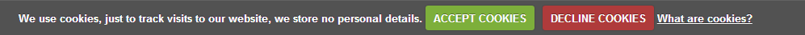

FullJS Template Documentation
FullJS Template DocumentationIntroduction What can be found in this package and what it can be used for
Thank you for purchasing a website template from our company. This manual will show you how to work with your template, how to edit it and make it a "live" website.
All pages content is made with HTML and dynamic animation is made with JavaScript.
Unzipping Template Package
After unzipping the template package you will find 3 folders: "documentation", "screenshots" and "site". You can also see a zip archive called "sources_############.zip" that you need to unzip.
The sources package contains all source files for the template. The package is password protected and can be extracted only with WinZip (Windows OS) and StuffitExpander (MAC OS) software.
You can download both applications for free using the free trial options:
While unzipping "sources_############.zip" archive you will be prompted to enter a password, which you can find at your Product Download Page (open the link in the email you received from our company).
As soon as you are done with the unzipping the template you should have 4 folders in total: "documentation", "screenshots", "site" and "sources".
General Information
This guide shows the specifics of managing the framework, its capabilities and principles. It explains the FullJS v.3 templates architecture and describes the principle of creating content pages as well as the specifics of script initialization. The Framework is geared towards creating animated templates which can be finely tuned and quickly edited. FullJS framework differs from its predecessors by its universality, allowing to create multiple kinds of templates.
The FullJS v.3 Framework has an inbuilt capacity of creating the mobile layout automatically. The templates are responsive, changing their layout for small resolutions or narrow screens. The framework has a set of customizable options and modules:
Framework Components
The Framework includes the following libraries and technologies:
- jQuery is a JavaScript library focusing on the JavaScript interaction with HTML. The jQuery library gives you easy access to any DOM element, allowing manipulations with attributes and DOM elements content. It also provides a convenient API for working with AJAX.
jquery.com - Twitter Bootstrap v.3.x.x is a free set of tools for creating responsive sites and web applications. It includes HTML and CSS styling templates for typography, web forms, buttons, marks, navigation blocks and other web interface components, including JavaScript extensions.
getbootstrap.com - Ajax is an approach to building interactive user interfaces and web applications, which consists in “background” data exchange with the web server. As a result, the page doesn't reload fully when the data is updated, making the web application faster and more convenient to use.
- HTML5 History API is a library for working with the browser address bar history.
https://github.com/browserstate/history.js/ - Font Awesome is vector font with a multitude of icons, which are easily modified with simple CSS. The font is Retina-supported.
http://fortawesome.github.io/Font-Awesome/ - LESS is a dynamic style language that provides the following extensions to CSS: variables, nested blocks, mixins, operators and functions.
http://lesscss.org/
Framework Features
The Framework has the following features:
- module core structure: the framework's core consists of modules that can be activated, expanding or changing the core functionality.
- emphasis on CSS3 animation and creativity: FullJS v.3 templates are supposed to replace Flash, so the animation is the distinctive feature of these templates. It is executed with CSS3 and not the script. The script animation has become a standard, however, it is slower than CSS3 animation.
- using Bootstrap: using Bootstrap as the site framework makes the code more legible, standardized and universal.
- responsiveness: in the era of rapid technology development unresponsive sites are not perceived to be fully functional any more. Responsiveness is becoming a standard. That's why this framework was made responsive.
- mobile layout: to meet the mobile devices limited resources, a mobile version was developed. It is created automatically and configured by the developer. This saves mobile resources and makes the site compatible with a wider range of devices.
- flexible site-to-device configuration system: in this type of sites, there is a mechanism allowing to manage elements rules, their display and behavior through CSS or JavaScript.
- loading pages with Ajax: saves from having to reload the whole site, lets you load separate pages, saving time and resources.
- History API: using this library eliminates the hash symbols (#) in the URLs for modern browsers, so the pages have a regular address (however, Internet Explorer 8, 9 still uses hash #). The library also adds functionality by enabling the Back and Forward browser buttons).
- regularly updated plugin inventory: the plugins base is always growing, with new galleries and features added.
- site search: the site has an inbuilt search function, allowing you to easily find the right page with a word or phrase.
- retention of all the positive features of FullJS: the unnecessary options of the previous FullJS releases were eliminated, but the best and most useful features were preserved in the product.
Files and Folders Architecture
The file structure of the essential files and folders looks the following way:
- ajax – a folder with pages loaded through Ajax *.html, *.php
- .htaccess - a web server configuration file for the Ajax folder (check the description of .htaccess in the root folder)
- 404.html - a page displayed when a browser generates the 404 error (the requested page was not found). This is usually a separate page loaded with Ajax, but it can also be located inside the index.html file
- search.php - a file responsible for searches on site pages
- assets - a folder containing a set of various helpful examples, scripts and styles from Twitter Bootstrap
- css – a folder with cascading style sheet files
- bootstrap.css - basic styles of the Twitter Bootstrap v3.x.x framework
- style.css - the main file containing the site's styles
- fonts - a folder with a set of Font Awesome icon fonts
- img - a folder with site images
- js - a folder for site scripts
- jquery.js - the jQuery framework
- history.js - a library to manage HTML5 History API
- device.js - a library to determine the type and the operational system of the device used to view the site
- core.js - the core file of the FullJS v.3 framework
- bootstrap.min.js - the Twitter Bootstrap v.3.x.x framework
- jquery.cookie.js - a jQuery plugin working with browser cookies
- jquery.mousewheel.min.js - a plugin which tracks the mouse wheel events
- script.js - the main file with essential scripts for the template
- less - a set of less files
- index.html - a file containing the basic html tree
- .htaccess - an additional configuration file for the Apache web server as well as other similar web servers. It allows to set a wide range of additional options and permissions for the web server's work in separate catalogs (folders). For example, it provides a manageable access to catalogs, reassignment of file types, etc. without changing the main configuration file
The architecture described above is typical for FullJS v.3 templates. However, as a rule, the templates are supplemented with scripts, stylesheets, additional pages, images, etc. But by default, this folder structure has to be preserved.
Editing template
Preparation
Go inside the root folder of the site. Each of the edited files is located in a folder with a matching type. Template editing is done by altering *.html, *.php, *.css (or *.less) and *.js files. To be able to edit the files, you'll need some knowledge of these languages: HTML, CSS (or LESS), PHP, JavaScript. You will also need to use an editor. Notepad (for Windows) is the simplest kind of editor that will open all the above file types. However, it's not convenient for editing, so you'd better get one of the following editors:
- SublimeText http://www.sublimetext.com/
- Dreamweaver https://creative.adobe.com/products/dreamweaver
- Notepad++ http://notepad-plus-plus.org/
To view the site locally on your computer, you'll need a local server, for example, Wamp (http://www.wampserver.com/en/). Without it, the AJAX queries and php files won't work. But if you're using the latest release of Mozilla Firefox, your site might be fully functional even without using the local hosting server (http://www.mozilla.org/en-US/firefox/new/).
Please check the tutorials below on how to configure the local development environment:
- How to install AppServ web development environment
- How to install WAMP web development environment
- How to install XAMP web development environment
Order of HTML structure
In the head tag, you have to include both the basic essential files and the custom *.css and *.js files (as well as meta-data). The files should be referred to in a certain order. The stylesheets should go first:
<link rel="stylesheet" href="css/style.css">
After that, the script files:
<script type="text/javascript" src="js/script.js"></script>
HTML pages specifics in the FullJS v.3 framework
Managed by the FullJS v.3 framework, the site has a slightly peculiar though clear and understandable structure. This example features an HTML code for a site, in which the pages are located in the index.html file:
<article id="content" data-follow="location" data-type="switcher" data-behavior="scroll">
<div data-id="page1"></div>
<div data-id="page2"></div>
<div data-id="page3"></div>
<div data-id="page4"></div>
</article>
There is a set of attributes that the framework core interacts with. The purpose of each one is described below:
- data-follow="location" is an attribute responsible for tracking the address bar changes and turning on the browser reaction to these changes.
- data-type="switcher" is the attribute determining the designation of the content pages block. For an HTML tree element containing pages to be switched, this attribute needs to equal the "switcher" string.
- data-behavior="scroll" is an attribute responsible for the script behavior on switching pages. For example, if you aim to create a single-page site, whose pages will follow each other and the address will switch as the pages are scrolled down, you will need to assign the "scroll" value to this attribute. If you don't need this behavior, just assign a blank string to the attribute: data-behavior="".
How to change the site preloader?
Often the spin.min.js script is used to make the customization easier afterward. The script lets you create a preloader with customizable settings. It's included and initialized in the script.js file. Please check the appropriate FAQ section to learn more about including custom scripts.
Sample preloader settings:
function spinnerInit(){
var opts = {
lines: 11,
length: 10,
width: 5,
radius: 14,
corners: 1,
color: '#fff',
speed: 1.3,
trail: 5
},
spinner = new Spinner(opts).spin($('#webSiteLoader')[0]);
}
$(document).ready(function(e){
spinnerInit();
});
$(window).load(function(){
setTimeout(function(){
$("#webSiteLoader").fadeOut(500, function(){
$("#webSiteLoader").remove();
});
}, 1500);
});
In this example the site preloader is initialized on the document event ready and removed on the window event load.
The preloader can also be a Gif-animated image. In this case, the spin.min.js script will not be needed any more, it can and should be disabled by removing the initialization script and the js file.
Subpages format
The framework allows the pages to be either all in the index.html, or in separate files that will be kept in a certain folder and will load dynamically (by default it's the ajax folder). If a page is inside index.html, it is usually a regular DIV-element located in a block with the data-follow="location" and data-type="switcher" attributes (the data-behavior attribute may be absent):
<article id="content" data-follow="location" data-type="switcher" data-behavior=""> … </article>
A page inside the block described above usually looks like this:
<div data-id="readmore">
<div class="container">
<div class="row">
<div class="col-lg-12">
<h2>Read More</h2>
<p>Aenean sapien massa, ultricies in risus at, consectetur.</p>
</div>
</div>
</div>
</div>
An external page will be loaded with AJAX and kept in the ajax folder. It is a regular page created according to HTML5 standards (in this example the Bootstrap classes are used):
<!doctype html>
<html lang="en">
<head>
<meta charset="UTF-8">
<title>Read More</title>
</head>
<body>
<div class="container">
<div class="row">
<div class="col-lg-12">
<h2>Read More</h2>
<p>Aenean sapien massa, ultricies in risus at, consectetur.</p>
</div>
</div>
</div>
</body>
</html>
It's not recommended to include script and style files in the loaded pages. It's best to include scripts in script.js.
<article id="content" data-follow="location" data-type="switcher" data-behavior="scroll">
…
<div data-id="page4"></div>
<div data-id="page5">
<!-- your content here -->
</div>
</article>
Adding new pages
Each element is a content page if it's located in the appropriate container with attributes described above and looks like this:
<div data-id="page1"></div>So, to add a new page, you just need to copy and paste this div tag below and fill in the page. The data-id="" attribute contains the new page name (the same name will be displayed in the address bar). Let's create a sample page and give it a name "page5".
Template Menu Setup
The main menu in a FullJS v.3 template is quite specific. To enable connections between the site pages, certain attributes have to be added to the menu. These attributes will simultaneously be the framework functioning options:
- data-follow="location" - an attribute responsible for tracking the address bar changes and turning on the browser reaction to these changes.
- data-type="navigation" - an attribute signifying the given element type. For the menu, the type and purpose of the element is the site navigation.
<nav data-follow="location" data-type="navigation">
<ul>
<li><a href="./page1">page1</a></li>
<li><a href="./page2">page2</a></li>
<li><a href="./page3">page3</a></li>
<li><a href="./page4">page4</a></li>
</ul>
</nav>
Links
The links in a template can be both external (leading to other domains) and internal (links to inner pages of the document - the pages located in the index file or loaded with Ajax). The internal links should start with "./". For example,
<a href="./about"></a>In this case the framework will know that it needs to show an internal content page.
Ajax Pages
The framework enables page load with the Ajax technology. Additional pages can be found in the ajax folder. Let's create a content file (somePage.html) and put it in the folder. After that, to load this external page by going to a link in the template, we have to add the name of the HTML file created earlier (with the *.html extension) to the href attribute of the link:
<a href="./somePage.html"></a>
We can add the data-flags="ajax" attribute to any page container:
<article id="content" data-follow="location" data-type="switcher" data-flags="ajax">
<div data-id="page1"></div>
<div data-id="page2"></div>
<div data-id="page3"></div>
<div data-id="page4"></div>
</article>
An Ajax page will be loaded to this container just as any other internal template page. This attribute signifies that the page is loadable and launches the appropriate algorithms for its loading.
Main Stylesheet Structure
You can edit the stylesheet in any code editor. The main css file style.css normally has the following structure:
- including other css files through import
- declaring body, headings, paragraphs and other elements styles
- specification of styles for header-а
- declaring content styles
- declaring footer-а styles
- additional styles specification
- styles corrections with media-queries to make the site responsive (@media (min-width: 1200px) {…})
- styles corrections for the tablet layout (the html.tablet block)
- styles corrections for the mobile layout (the html.mobile block).
Including CSS files
To avoid overloading the index file, you should include files in the main stylesheet style.css. Including them this way is not a strict requirement, but it simplifies the site structure.
Example:
@import 'photoswipe.css';
Styles for different layouts
As a rule, almost all the template files are located in style.css. When the site is opened on a device, the site engine determines, whether the device is a desktop, a tablet or a mobile phone. This adds corresponding classes to the html tag. These classes are listed below:
html.desktop{}
html.tablet{}
html.mobile{}
To make sure that the styles are applied to a certain type of devices, you should begin them with indicating the type of layout they belong to:
html.tablet h1 {
font-size: 45px;
}
By default, all the styles are specified for the desktop layout, so there is no need to indicate html.desktop before the styles.
Responsive Styles
To manage the site display on different resolutions, media-queries are used.
All the styles that will be applied to a certain resolution should be indicated inside the media block (max-width: …px){…}.
For example:
@media (max-width: 1024px) {
h1{
font-size: 45px;
}
}
@media (max-width: 650px) {
h1{
font-size: 35px;
}
}
Including scripts
It is recommended to avoid including scripts the regular way in the "head" tag of index.html and to include them in the script.js file instead. This file is responsible for the settings as well as for the core and plugins initialization. You can include scripts using the “include” function, with its argument being the inclusion script:
include('js/superfish.js');
The script inclusion can be based on a condition, whether the site will be opened on a phone or a tablet:
if (!FJSCore.mobile){
include('js/superfish.js');
}
I.e. the given script will be loaded only on a desktop computer or a tablet.
Scripts should be initialized either on the event of document readiness:
$(document).ready(function(e){
…
});
or on the event of window load finish:
$(window).load(function(e){
…
});
Plugin configuration
The plugin is configured and initialized depending on its settings, in accordance with the JavaScript and jQuery syntax.
For example:
$('.someSelector').somePlugin({
'parameter1': parameterValue1,
'parameter2': parameterValue2
});
Editing PSD files
PSD files are located in the "sources/psd" folder in your template package. PSD are the source files of the template design. They are divided into layers so any part of the template design can be changed.
During the customization process you can refer to the PSD files in order to change the images used in the content pages or in the design.

You can learn more about working with photoshop by checking the detailed tutorials.
Custom Fonts
Some templates may contain the non-default fonts used in the design. By default the internet browser can render only fonts that are installed to your operating system. In other words if your website design uses some custom fonts and these custom fonts are not installed on your website visitor's computer, custom fonts won't be displayed. Default fonts will be rendered instead. That's why web developers should look for some alternative solutions. In our templates custom fonts are embedded using Google Web Fonts technology.
Google Web Fonts
You can learn more on using Google Web Fonts by checking the tutorial on how to work with Google web Fonts.
Customization Tutorials
How to edit text
Templates are HTML based templates so all content is stored and could be accessed though the .html files.
- Open your template package and go to the site folder.
- There open index.html file with your HTML editor.
- You can use the search tool CTRL+F to find any text you need.
- Edit text in HTML editor. Save the file and open it with your Browser to see the changes.
The other way is to use the browser developer tool to find the blocks you want to edit. You can learn more about the developer tools checking the tools description and tutorials.
Feel free to check the following Developer Tools article.
You can also check the video tutorial on how to edit text in JS Animated templates
How to edit images
Open the template folder, go to 'site/images' directory. You can upload your images with the same name and extension to replace the default ones.
The other way is to upload custom images with your titles and extensions. Then you’ll need to change the image file names in the html files.
- Open .html file from the “site” folder with your html editor.
- Use search tool CTRL+F to find the images in the html file.
- Replace the image title and extension.
You can also check the video tutorial on how to edit images.
How to activate contact form
- Open the template folder.
- Go the site/js directory.
- There open the 'TMForm.js' file with your editor (Adobe Dreamweaver, Notepad etc).
- Using the Find and Replace tool (CTRL+F) search for the ownerEmail or just scroll down to the very bottom of the page.
You should see the following line:
ownerEmail:'#'
replace # symbol with your email address. That's all, now the contact form should send the messages to your email account.
You can see the detailed tutorial on how to activate contact form in your template.
Site Mobile Layout
General Information
The FullJS v.3 framework has a built-in option of creating the mobile layout automatically. This layout will display when the template is loaded on a mobile phone. It ensures that the site will be loaded in its full view but with responsive design on tablet devices. This is possible since the modern tablets are equipped with powerful hardware and are almost equal to desktop computers in their capabilities. The mobile layout will be launched on mobile devices with small screens, e.g. a cell phone or other devices with Internet browsers.
Structure
The document tree of the mobile version has the following structure:
<div id="mobile-wrap">
<div id="mobile-header">
<h1></h1>
<select id="mobile-navigation">
…
</select>
</div>
<div id="mobile-content">
<div data-id="page1"></div>
<div data-id="page2"></div>
…
<div data-id="pageN"></div>
</div>
<div id="mobile-footer"></div>
</div>
On condition that the FJSCore.mobile variable is true, the framework builds this structure automatically, at the same time deleting the document tree for the desktop layout. All of the desktop layout pages, without any changes and keeping the same names, are relocated into block:
<div id="mobile-content"></div>The new select mobile menu is created, it's based on the site menu with a specified attribute data-type="navigation". A drop-down menu is added with unlimited sub-menu levels. This menu is located in the site header. The h1 tag is transferred there as well. The tag can be used as a holding block for the logo. The .copyright block (the privacy policy link) and .follow-links (a list of social links) are transferred to the <div id="mobile-footer"></div> block.
Editing
If you want a certain block to be absent in the mobile layout, you just need to assign the .desktop-only class to it. To display a block on the mobile layout only, there is another class - .mobile-only.
The mobile layout is created by default, but it's possible to disable that function. As was described above, the mobile layout scripts need to be enclosed into the condition:
if(FJSCore.mobile){}.
As the mobile layout tree is created with the framework core, *.js-scripts are used to edit this tree. As an example, let's wrap all the footer and header elements into a div element with the .container class:
$('#mobile-header>*').wrapAll('<div class="container"></div>');
$('#mobile-footer>*').wrapAll('<div class="container"></div>');
Disabling the Mobile Version
To disable the mobile layout, the mobileVersion property of the FJSCore mobileVersion object should be initialized. Just set mobileVersion: false in Core.js. Please check the FAQ for details of Сore.js. configuration.
Core.js. Options and Settings
This block describes the functioning of the principal framework script core.js. It defines the main variables, their purposes and events as well as gives sample codes to use.
Core Options
Core.js has a set of options which unlock the core's potential and simplify site building:
- defState: '' - a variable responsible for the default page (main page) link. It's usually a blank string, so the link in the address bar will look the following way: http://domenname/site/ ;
- defMobileState:'' - a variable responsible for main page link of the mobile version;
- emptyNavigationText:'-- navigate to --' - a variable responsible for the text displayed in the select. This mechanism menu on mobile devices. You will be transferred to the menu item with this text if the required menu item is not found, e.g. in the case of PrivacyPolicy;
- ajaxFolder: "/ajax/" - a variable indicating the name of the folder with Ajax loaded pages;
- indexFile: 'index.html' - a variable indicating the main index file. All the required *.css and *.js files have to be included in the index file;
- mobileVersion: true - a core variable responsible for launching the mobile layout;
- mobileFollowLinks: true - a core variable responsible for launching the social links rearranging mechanism. It will be helpful when the space for displaying the links is limited;
- state - a variable showing the current page name. This is the same name displayed in the address bar;
- prevState - a variable showing the previous page name. It can sometimes be required to manipulate page animation;
- mobile - a core variable indicating that the site is loaded on a mobile device;
- tablet - a core variable indicating that the site is loaded on a tablet.
Right now you can change the variables values only in core.js. Subsequently, a mechanism will be created allowing to initialize all the customizable core settings in other script files.
At this moment, you can get a variable value by referring to the main object FJSCore. For example, the expression FJSCore.mobile will return the true/false value, which indicates whether the site is launched on a mobile phone.
Core events
The core core.js uses events in its work. The most important and widely used is the changeLocation event. This event fires every time the site url is changed either by clicking on menu buttons and links or loading the site. Control over this event allows to assign necessary effects to page transitions, e.g. set up animation, put some conditions, etc. The event is applied to the document.
The given example outputs the event and the new url value into the console:
$(document).on('changeLocation', function(e,d){
console.log(e);
console.log(d);
});
After that, you can expand the script, for example, by adding a condition to check for a mobile device:
$(document).on('changeLocation', function(e,d){
if (FJSCore.mobile) {
…
} else {
…
}
});
The responsiveContainer module
This block answers the questions: "What is the responsiveContainer module?", "What is it for?" and "How can it be set up?".
ResponsiveContainer is a core.js module responsible for modifying the layout for different resolutions. To be animated, the blocks need to be positioned absolutely, which prevents the site from reacting to the window size changes. This problem is solved by including the core module responsiveContainer. It's important to create pages according to the rules for responsive site creation, with an appropriate structure (in this case Bootstrap). This module is called in the block for the window load finish and looks the following way:
$(window).load(function(){
FJSCore.modules.responsiveContainer({
elementsSelector: '#other_pages>div',
defStates: ''
});
});
The responsiveContainer module can work in two modes: changing the body element min-height depending on the height of content and adding a scroll to the page. This is achieved by changing properties at module initialization.
The responsiveContainer plugin options (the default values are indicated):
- container: '' - a page container selector. Can be both a parent element for a page and a page itself;
- elementsSelector: '.content-pages>div' - a page selector for further manipulation with pages;
- type: 'outer' - a mode for the plugin functioning. The outer value will add a scroll to body, the inner one will add a scroll to the DOM tree elements specified in the elementsSelector option;
- affectSelectors: 'header, footer' - element selectors affecting the page height. These can be footer and header, for example, or some bars. If a header or footer are absent in a document, their height will simply not be taken into account, even if they are defined with a parameter;
- deltaHeight: - a value by which the site height can be changed for some actions. For example, when a certain page is loaded, some element on top may need to be extended, increasing the height of the site, but this selector is not indicated in affectSelectors, because it doesn't affect all the pages height, just one particular page. In this case, the updateDeltaHeight event of the plugin should be called for body, its desired value defined by the string:
$('body').trigger('updateDeltaHeight', '300');Please keep in mind that the deltaHeight value should be set to zero on transition to another page where there is no need for the height to increase:
$('body').trigger('updateDeltaHeight', '0'); - activePageSelector: '.activeSubPage' - an active page class selector. This selector defines the page that sets the site height;
- resizeDisableSelector: '.disableResize' - it is sometimes necessary not to account for the height on certain kinds of pages. This is what this option is for. In such a page, you need to add the disableResize class (or some other class) to a DOM tree element, making it a value for the given property. The height will not be accounted for on the page then;
- defStates: '' - when the page value equals one of the values indicated in this property, the height resizing will not be executed and will instead be equal to the min-height css property indicated in style.css.
If you need to list the pages where the height should not be recalculated, the given option has to be overridden as in the example below. These actions are usually needed for splash pages and gallery pages. Please note that a blank string is the first value in the list of these parameters. After that, the gallery addresses are listed.
These are the values that go after the last slash in the browser address bar:
FJSCore.modules.responsiveContainer({ defStates: ',fashion,nature,food,animals' });
ResponsiveContainer module sample configuration
Let's consider a case where there is no footer and header (or either one of them) in the site - it's obvious that there is nowhere to account for the height. And another case where the header and footer are present, but for some reason, there is no need to account for their height. If only header height has to be accounted for, the affectSelectors parameter can be reassigned this way:
FJSCore.modules.responsiveContainer({
affectSelectors: 'header'
});
If the footer or header have absolute positioning, you need to do the following for the plugin to work: add a margin property to the pages CSS-selector (the elementsSelector value) in style.css where the site's main styles are declared. The top and bottom values of the margin property will be taken into account when calculating the site height.
In style.css:
.content-pages>div{
margin: 200px 0;
}
header, footer{
position: absolute;
}
In script.js:
FJSCore.modules.responsiveContainer({
elementsSelector: '.content-pages>div',
affectSelectors: ''
});
FAQ
Why am I not forwarded to the required page when the site has finished loading?
If you are not transferred to the right page after the site loads, you need to check whether the afterload event is called in the script.js framework file. The call has to be executed when the load finish event for the window fires.
For example:
$(window).load(function(){
$(this).trigger('afterload');
});
What is device.js? What is it for and what does it do?
Device.js is a library that determines the operational system and type of the device on which the site is launched. This library is very helpful in developing sites geared towards both desktop and laptop computers as well as mobile devices with limited resources and smaller screens. Together with media-queries this library allows to create a really flexible and understandable site structure.
When the script is executed, corresponding classes are added to the HTML document body, and it becomes possible to manage the site display or behavior right out of the css or JavaScript files.
How to alter the page changing animation?
Altering the page changing animation is relative easy. Open the script.js and index.html files. Check the name for the page container in index.html. It's usually a DOM tree element with the following properties: data-follow="location" data-type="switcher" data-behavior="" and id="content".
In the script.js file, find the lines :
$('#content')
.on('show','>*',function(e,d){
d.curr
.addClass('active')
.stop(true, true)
.css({'top': '100%',
'display': 'block'})
.animate({
top: '0'
},{
duration: 1000,
ease: 'easeInOutCubic'
})
}
})
.on('hide','>*',function(e,d){
$(this)
.removeClass('active')
.stop(true, true)
.animate({
top: '100%'
},{
duration: 500,
ease: 'easeInOutCubic',
complete: function(){
$(this).css('display','none');
}
})
});
You can change the site animation by editing CSS rules in the animate block. You can also add your own codes for animation of appearance:
.on('show','>*',function(e,d){
/* your code here */
and disappearance of pages:
.on('hide','>*',function(e,d){
/* your code here */
If other pages are in another container (e.g. Ajax - loaded pages), their animation may be found in another similar part of code in the same script.js file.
Example:
$('#other_pages')
.on('show','>*',function(e,d){
$.when(d.elements)
.then(function(){
…
})
})
.on('hide','>*',function(e,d){
…
});
How to change splash?
Changing the splash page may differ between templates. Normally, it is similar to regular plugin editing, with the plugin having a set of customizable options.
For example:
$('.splash').tm3DCircleCarousel({
container: '.splashHolder',
transformClasses: '.scale100, .scale90, .scale80, .scale70, .scale60',
itemOffset: 110,
useCSS3Animation: true,
reflections: {
enable: true
},
autoplay: {
enable: true,
timeout: 8000
}
});
How to turn a sub-page into a splash page?
To remove the splash page or change it, you need to clear the content in the div-element with a data-id parameter (it's usually data-id="", data-id="splash" or data-id="home"), or insert another page code into it. This div-element, as a rule, is located in the following block of HTML code in index.html:
<article id="content" data-follow="location" data-type="switcher" data-behavior="">
For example, this splash page:
<article id="content" data-follow="location" data-type="switcher" data-behavior="">
<div data-id="">
<div class="splashHolder">
<ul class="splash">
<li><a href="img/bg_pic1.jpg"><img src="img/gall_slide1.jpg" alt="Image 5"></a></li>
…
<li><a href="img/bg_pic4.jpg"><img src="img/gall_slide4.jpg" alt="Image 4"></a></li>
</ul>
</div>
</div>
</article>
Change into a regular page:
<article id="content" data-follow="location" data-type="switcher" data-behavior="">
<div data-id="">
<div class="container">
<div class="row">
<div class="col-lg-12">
<h2>Some title</h2>
<p>Aenean sapien massa, ultricies in risus at, consectetur.Aliquam ac bibendum odio. Aliquam mattis scelerisque ligula. </p>
</div>
</div>
</div>
</div>
</article>
TM add-ons
Depending on a template design, a template may include the following free add-ons:
- Contact Form - gives visitors the opportunity to send messages to the site-owner.
- Search Engine - performs search through content of .html files.
- Under Construction - is the page with countdown timer.
- Subscription Form - allows to organize newsletter subscription.
Note, depending on the template design, it may include Contact Form, Search Engine, Countdown and Subscription Form add-ons that are already implemented into your template and are working by default. Feel free to check the detailed documentation for each add-on in case of additional configuration or if you are going to implement them into another website/project/template.
Contact Form manual
<form id="contact-form">
<div class="contact-form-loader"></div>
<fieldset>
<label class="name">
<input type="text" name="name" placeholder="Name:" value="" data-constraints="@Required @JustLetters" />
<span class="empty-message">*This field is required.</span>
<span class="error-message">*This is not a valid name.</span>
</label>
<label class="state">
<input type="text" name="state" placeholder="State:" data-constraints="@JustLetters" />
<span class="empty-message">*This field is required.</span>
<span class="error-message">*This is not a valid state.</span>
</label>
<label class="email">
<input type="text" name="email" placeholder="Email:" value="" data-constraints="@Required @Email" />
<span class="empty-message">*This field is required.</span>
<span class="error-message">*This is not a valid email.</span>
</label>
<label class="phone">
<input type="text" name="phone" placeholder="Phone:" value="" data-constraints="@Required @JustNumbers" />
<span class="empty-message">*This field is required.</span>
<span class="error-message">*This is not a valid phone.</span>
</label>
<label class="fax">
<input type="text" name="fax" placeholder="Fax:" data-constraints="@JustNumbers" />
<span class="empty-message">*This field is required.</span>
<span class="error-message">*This is not a valid fax.</span>
</label>
<label class="file">
<input type="file" name="attachment" class="filestyle file-input" data-input="true" >
<span class="empty-message">*This field is required.</span>
<span class="error-message">*This is not a valid file.</span>
</label>
<label class="message">
<textarea name="message" placeholder="Message:" data-constraints='@Required @Length(min=20,max=999999)'></textarea>
<span class="empty-message">*This field is required.</span>
<span class="error-message">*The message is too short.</span>
</label>
<div>
<a href="#" data-type="submit" >submit</a>
<a href="#" data-type="reset" >reset</a>
</div>
</fieldset>
<div class="modal fade response-message">
<div class="modal-dialog">
<div class="modal-content">
<div class="modal-header">
<button type="button" class="close" data-dismiss="modal" aria-hidden="true">×</button>
<h4 class="modal-title">Modal title</h4>
</div>
<div class="modal-body">
You message has been sent! We will be in touch soon.
</div>
</div>
</div>
</div>
</form>
Description
The HTML structure inside the form is flexible, the only condition is that all the fields (input, textarea HTML elements) should be placed inside the label tags that have class corresponding to their type.There are following classes/types by default:
- name – the User's Name. Validation: digits are disallowed, not less than 2 symbols;
- email – the User's Email;
- state – Country (Area). Validation: digits are disallowed, not less than 2 symbols;
- phone – Phone. Validation: digits only, not less than 5 symbols. Additional acceptable not alphabetical symbols: "space", "+" and "-";
- fax – Fax. Validation: digits only, not less than 5 symbols. Additional acceptable not alphabetical symbols: "space", "+" and "-";
- file – File upload. Validation: max upload file size 10 MB. Only for doc, docx, txt, pdf, zip, rar file formats.
- message – Message. Validation: any symbols, not less than 20 symbols.
- @Required – This data-constraints attribute is used as a pointer for the optional fields while filling the forms out.
Also label tag mentioned above can contain nested span elements with classes error-message and empty-message, which include the error message in case the data in the field is specified incorrectly or the field is just empty.
Script Initialization
To activate the contact form you need to include contact from script in the <head> section of HTML file and copy "bat" folder to your website root folder. The "bat" folder should contain 2 file: MailHandler.php, libmail.php
<script type="text/javascript" src="js/jquery.js"></script> <script type="text/javascript" src="js/modal.js"></script> <script type="text/javascript" src="js/bootstrap-filestyle.js"></script> <script type="text/javascript" src="js/TMForm.js"></script>
Than you need to open MailHandler.php file in bat folder and set/change the required options:
$owner_email='#'; //SMTP server settings $host = 'ssl://smtp.gmail.com'; $port = '465';//"587"; $username = ''; $password = ''; $subject='A message from your site visitor '; $file_types='/(doc|docx|txt|pdf|zip|rar)$/'; $error_text_filesize='file size must be less than'; $error_text_filetype='wrong file type'; $error_text='something goes wrong';
Use the following parameters for customization:
- $owner_email – the Email address the data will be sent to;
Keep in mind, that you need to define the following four options ($host, $port, $username and $password), just when you use the SMTP server to send mails from your website. By default MailHandler.php uses the standard PHP mail() function that works in most cases and does not require additional settings.
- $host – SMTP host address for sending mails;
- $port – SMTP host port for sending mails;
- $username – username for login into SMTP server;
- $password – password for login into SMTP server;
- $subject – subject for your contact form mails;
- $file_types – file types, that you can upload and send via the form;
- $error_text_filesize – error text for not correct size of the uploaded file;
- $error_text_filetype – error text for not correct type of the uploaded file;
- $error_text – error text for issues with the mail sending.
Search engine manual
Attention! Search feature will not work locally. It works only on a hosting-server with PHP enabled.
Enter a word to search for:
For instance: lorem, ipsum, dolor
<form id="search" action="search.php" method="GET" accept-charset="utf-8">
<input type="text" name="s" />
<a onclick="document.getElementById('search').submit()">Search</a>
</form>
Description
Files needed to work with the form:
- jquery.js – jQuery library (the form will work with this version of library only);
- search.css – stylesheet file, which is being used for the search results pages stylization;
- search.php – page, where the search results will appear;
- search.js – script, which is responsible for the search results output in an iframe on the page search.php;
- results.php – PHP script, which actually performs the search.
In this form we should define such parameters as: action="search.php" and method="get", also set parameter for an input: name="s". If you want to change the name of the search form, which is id="search" by default, you should change it on the line 3 in the file search.js as well, you can find it in search folder.
Settings
Note, search form is enabled, configured and works by default. These steps are required if you are trying to use this search form in another project/template without working search form.
To make the form work correctly, please, perform the following steps:
- copy search folder to the root directory with your *.html files;
- move file search.php from the search folder to the root directory (with *.html files);
- edit your form, using the directions above;
- copy partly header and footer with all the connected scripts in the section <head></head> to the page search.php, but necessarily add connection of the file search.js. For example:
<link rel="stylesheet" href="css/reset.css" type="text/css" media="all"> <link rel="stylesheet" href="css/fonts.css" type="text/css" media="all"> <link rel="stylesheet" href="css/style.css" type="text/css" media="all"> <script src="js/jquery.js"></script> <script src="search/search.js"></script>
- for the search results output add the following block to your content:
<h3>Search result:</h3> <div id="search-results"></div>
- change style of the search results, using search.css.
All the rest main styles of your template will be automatically pulled from the file style.css by the PHP script.
Countdown Script Manual (Under Construction page)
Days
Hours
Minutes
Seconds
<div id="counter"></div> <div class="counter_desc"> <div class="days">Days</div> <div class="hours">Hours</div> <div class="minutes">Minutes</div> <div class="seconds">Seconds</div> </div>
Features:
- counts time till exact date;
- has custom skin designs.
Description
Files needed to work with the timer:
- jquery.js – jQuery library (the timer will work with this version of library only);
- jquery.countdown.min.js – the timer functionality;
- demo.css – the set of CSS styles for the timer stylization.
<link rel="stylesheet" href="css/demo.css" type="text/css" media="all"> <script type="text/javascript" src="js/jquery.js"></script> <script type="text/javascript" src="js/jquery.countdown.min.js"></script>
Initialization
You can find code for the timer initialization in the end of the jquery.countdown.min.js file:
$(document).ready(function(){
var _date=new Date()
,countdown_to={
year:2013
,month:6
,date:13
,hours:0
,minutes:15
,seconds:00
}
_date.setFullYear(countdown_to.year,countdown_to.month,countdown_to.date)
_date.setHours(countdown_to.hours)
_date.setMinutes(countdown_to.minutes)
_date.setSeconds(countdown_to.seconds)
/*code for demonstration*/
_date=new Date()
_date.setMonth(_date.getMonth()+8)
/*end code for demonstration*/
$('#counter').countdown({
image: 'images/digits_inverted.png',
startTime: _date,
stepTime: 35
});
});
The initialization occurs on the event $(document).ready().
Parameters:- image – shows path to the image which will be used as a skin (the directory images contains files that you can use as skins for the timer);
- startTime – sets the final date of the countdown. Time countdown is implemented with the help of variable _date;
- stepTime – sets cycle rate of numbers' animation.
The demo version shows the time that remains from the current date plus 8 months. That is why timer starts a new countdown every time you refresh the demo page. Here is a code where you can edit these parameters:
/*code for demonstration*/ _date=new Date() _date.setMonth(_date.getMonth()+8) /*end code for demonstration*/
If you want to set exact date, you should change variable _date. To do this you must change values for year, month(pay attention that months' numbering starts from zero), date, hours, minutes, seconds. Here is a piece of code where you can change these parameters:
$(document).ready(function(){
var _date=new Date()
,countdown_to={
year:2013
,month:6
,date:13
,hours:0
,minutes:15
,seconds:00
}
});
Also you have to delete the following code:
/*code for demonstration*/ _date=new Date() _date.setMonth(_date.getMonth()+8) /*end code for demonstration*/
Color themes
Below you'll find examples of skin solutions for the timer. All these skins you can find in images directory.
Days
Hours
Minutes
Seconds
$('#counter').countdown({
image: 'images/digits.png',
}); Days
Hours
Minutes
Seconds
$('#counter').countdown({
image: 'images/digits2.png',
}); Subscription form manual
Subscribe Form Sample
<form id="subscribe-form">
<div class="success">Your subscription request<br> has been sent!</div>
<fieldset>
<label class="name">
<input type="text" value="Enter Name:">
<span class="error">*This is not a valid name.</span></label>
<label class="email">
<input type="email" value="Enter Email:">
<span class="error">*This is not a valid email address.</span></label>
<div class="btns"><a href="#" class="button" data-type="submit">Submit</a></div>
</fieldset>
</form>
Description
The HTML structure inside the form is flexible, the only condition is that inputs should be placed inside the label tags that have class corresponding to their type.
There are following classes/types by default:
- name – the User's Name. Validation: digits are disallowed, not less than 2 symbols;
- email – the User's Email;
Also label tag mentioned above can contain nested span elements with class error, which include the error message in case the data in the field is specified incorrectly.
Script Initialization
To activate the subscribe form you need to include subscribe form script in the <head> section of HTML file and copy "bat" folder to your website root folder. The "bat" folder should contain 1 file: MailHandler-sub.php
<script type="text/javascript" src="js/jquery.min.js"></script> <script type="text/javascript" src="js/sForm.js"></script>
After this you should initialize your subscription form on the $(window).load() : event at the end of sForm.js file
$(window).load(function(){
$('#subscribe-form').sForm({
ownerEmail:'#',
sitename:'sitename.link'
})
})
Use the following parameters for initialization:
- ownerEmail – the Email address the data will be sent to;
- sitename – website address which maintains subscription form.
In case of successful subscription website owner and website visitor get two separate successful subscription confirmation emails. Website owner target email is grabbed from sForm.js file and website visitor email is an email specified during subscription.
Cookie Policy
Cookies are small text files which websites place on visitors’ computers. They’re typically used to identify that particular visitor and provide them with a better experience. Cookies are a crucial part of many website functions which we take for granted.
For instance, it’s usually cookies which allow online shops to remember what items you have in your shopping trolley. They’re also used to keep you logged in to a website, or to provide valuable usage statistics and information to website owners.
If you run a website, it almost certainly uses cookies. Their most likely function is to monitor visitor numbers and behaviours through tools like Google Analytics. They may also be used to display relevant adverts to visitors, or – if you sell online – to power key parts of your online shopping system.
26th May 2012 - The ICO released a change to the enforcement, "implied consent" is now allowed as long as you make it clear where your privacy/cookie policy is.
Box info:
Following the Cookie Law conditions, we suggest you add the plugin cookiecuttr created by Chris Wharton and provided under the GNU General Public License.
This is how it looks like:
This plugin is used to warn the visitors of your website about cookies usage. The plugin will add the information panel/box which can be fully customized via css and js files:

How to implement the plugin
You need to download the jquery.cookie.js, jquery.cookiecuttr.js and cookiecuttr.css file. Copy them into the js and css folders respectively, include plugin scripts and css file reference in the <head> section of each html file:
<!-- cookiecuttr plugin --> <link rel="stylesheet" href="css/cookiecuttr.css"> <script src="js/jquery.cookie.js"></script> <script src="js/jquery.cookiecuttr.js"></script> <!-- end cookiecuttr plugin -->
Plugin customization
The plugin has a lot of parameters and options. This allows you to customize it according to you needs and wishes.
Here are just a few of them:
cookieCutter // if you’d like to actively hide parts of your website set this to true, for example say you use a comments system that inserts cookies, you can put the div name in below to replace it with a cookie warning message.
cookieAnalytics //if you are just using a simple analytics package you can set this to true, it displays a simple default message with no privacy policy link - this is set to true by default.
cookieDeclineButton // if you’d like a decline button to (ironically) write a cookie into the browser then set this to true.
cookieAcceptButton // set this to true to hide the accept button, its set to false by default
cookieResetButton // if you’d like a reset button to delete the accept or decline cookies then set this to true.
cookieOverlayEnabled // don't want a discreet toolbar? this makes the whole message into a 100% height
cookiePolicyLink // if applicable, enter the link to your privacy policy in here - this is as soon as cookieAnalytics is set to false;
cookieMessage // edit the message you want to appear in the cookie bar, remember to keep the {{cookiePolicyLink}} variable in tact so it inserts your privacy policy link.
cookieAnalyticsMessage // edit the message you want to appear, this is the default message.
cookieWhatAreTheyLink // edit the link for the 'What are Cookies' link.
cookieErrorMessage // edit the message you’d like to appear in place of the functionality
cookieNotificationLocationBottom // this is false by default, change it to true and the cookie notification bar will show at the bottom of the page instead, please note this will remain at the top for mobile and iOS devices and Internet Explorer 6.
cookieDisable // list elements comma separated in here that you want to disable, this will only work if cookieCutter is set to true.
cookieAcceptButtonText // you can change the text of the green accept button.
cookieDeclineButtonText // you can change the text of the red decline button.
cookieResetButtonText // you can change the text of the orange reset button.
cookieWhatAreLinkText // you can change the text of the "What are Cookies" link shown on Google Analytics message.
cookiePolicyPage // set this to true to display the message you want to appear on your privacy or cookie policy page.
cookiePolicyPageMessage // edit the message you want to appear on your policy page.
cookieDiscreetLink // false by default, set to true to enable.
cookieDiscreetLinkText // edit the text you want to appear on the discreet option.
cookieDiscreetPosition // set to topleft by default, you can also set topright, bottomleft, bottomright.
cookieDomain // empty by default, add your domain name in here without www. or https:// or http:// to remove Google Analytics cookies on decline.
You can find more detailed information and instructions on plugin customization and usage at the official cookiecuttr website.
Uploading template
In order to make your site "live", you need to upload all the content of "site" folder from your local computer to your hosting server.
Please note: your website root depends on the directory structure on your hosting server. If you upload the "site" folder itself into your server, the root to your website will be http://your_domain_name/site. To avoid this and make the website root http://your_domain_name/ please open the "site" folder and upload the folder content.
This video tutorial will show you how you can upload files to your host using free FTP software FileZilla.
This video tutorial will show you how you can upload files to your host using hosting cPanel (WebHost Manager, WHM).
Please do not upload the sources directory or any of the template source files to the hosting server.
Addendum where to get help, support and additional information
We hope this manual was useful for you and helped you to install, edit the template and to resolve your issues.